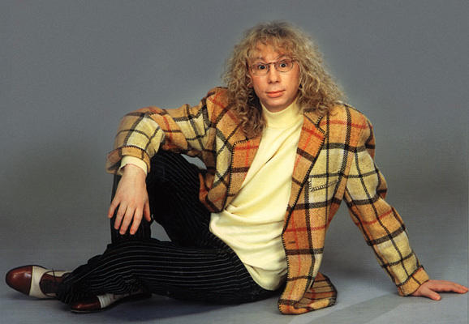
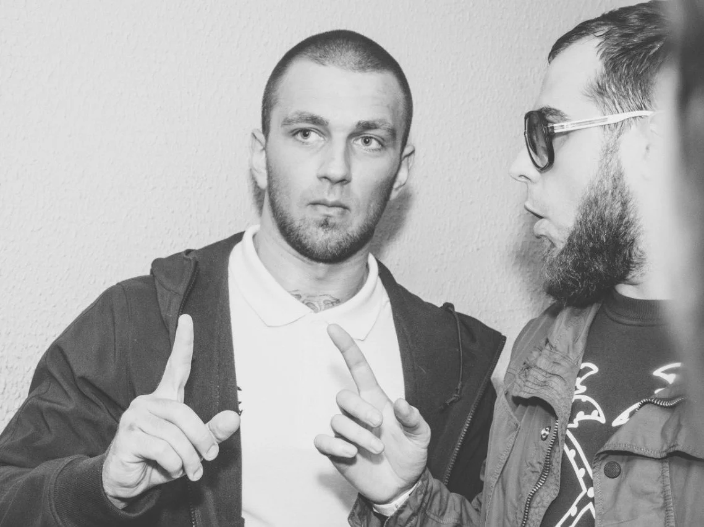
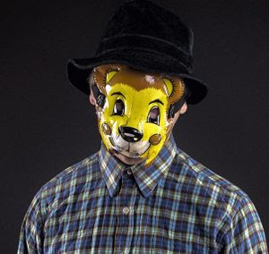

Вы можете управлять размером изображения, используя свойства width и height CSS так же, как вы
использовали их по отношению к любому другому блоку.

Выравнивание изображений с помощью CSS
Трагедия Всей Жизни – самобытная экспериментальная московская формация.
Начало ей было положено ещё в далёком 2006 году, когда двое молодых парней решились воспользоваться микрофонами,
чтобы дать выход своему внутреннему состоянию.
Это были Ветл Удалых и Тоныч Гоглев. Позже к коллективу присоединился Саша Горбатый в качестве аранжировщика.
Собственно половина минусов на первый диск ТВЖ «Бессознательное»,
который вышел в свет в 2009 году были написаны Горбатым.
Вторая половина дело рук Ветла, после выхода «Бессознательного» из коллектива уходит Тоныч и начинает работать сольно
в совсем другом направлении, в Феврале 2010 года к ТВЖ присоединяется Никита Штангист.
Центрирование изображений с помощью CSS
По умолчанию изображения являются встроенными элементами. Это означает, что они окружены текстом. Для центрирования
изображения его нужно превратить в блочный элемент, использую свойство display со значением block.
После превращения изображения в блочный элемент вы можете центрировать его двумя способами:
применить к элементу-контейнеру свойство text-align со значением center; применить к изображению
свойство margin и установить для левого и правого полей значение auto.

Фоновое изображение
Свойство background-image
Свойство background-image позволяет поместить изображение позади HTML-элемента. Это может быть вся страница
или ее часть. По умолчанию фоновое изображение повторяется, заполняя весь блок.
Путь к изображению следует после букв url и помещается в круглые скобки и кавычки.
Повторяющиеся изображения
Свойство background-repeat
Свойство background-repeat может принимать четыре значения.
repeat
Фоновое изображение по горизонтали и вертикали (это поведение по умолчанию, если свойство background-repeat
не используется);
repeat-x
Изображение повторяется только по горизонтали;
repeat-y
Изображение повторяется только по вертикали;
no-repeat
Изображение появляется только один раз.
Свойство background-attachment
Свойство background-attachment определяет, должно ли фоновое изображение оставаться на одном месте или
передвигаться при прокручивании страницы. Это свойство может принимать одно из двух значений.
fixed
Фоновое изображение остается в одном и том же положении на странице;
scroll
Фоновое изображение передвигается вверх и вниз при прокручивании страницы.
СЛОМАЙ ГЛАЗА
Положение фонового изображения
Свойство background-position
Если фоновое изображение не повторяется, то вы можете использовать свойство background-position,
чтобы указать в каком месте окна браузера оно должно быть помещено. Это свойство обычно имеет пару значений.
Первое представляет положение по горизонтали, второе - по вертикали.
left/center/right left/center/right
Вы также можете использовать пару значений в пикселях или процентах. Они определяют расстояние от верхнего
левого окна браузера (или объекта-контейнера). Верхний левый угол соответствует значению 0% 0%.
Стенографическое свойство background
Свойство background используется в качестве стенографического свойства для всех остальных свойств фона.
Свойства должны указываться в следующем порядке, однако вы можете пропустить любое значение, если оно вам
не нужно.
background-color
background-image
background-repeat
background-attachment
background-position
Язык CSS3 также допускает использование нескольких фоновых изображений путем повторения свойств background.
Изображения-ролловеры и спрайты
Используя CSS3, можно создать ссылку или кнопку, меняющую свой стиль при наведении на нее указателя мыши
и при щелчке по ней - этот эффект называется ролловером.
Подобное достигается путем назначения для ссылки или кнопки фонового изображения, имеющего три различных стиля,
при этом в каждый момент времени отображается только один из них.
Градиенты
В CSS3 появилась возможность задавать для блока градиентный фон. Градиент создается с помощью свойства
background-image: linear-gradient().
Контрастность фоновых изображений
Если вы хотите наложить текст на фоновое изображение, то это изображение должно иметь низкую контрастность,
чтобы текст был читаемым.